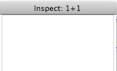
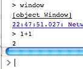

Firefox 4 Web Console
kdangoor, October 20, 2010
Overview
The Web Console feature in Firefox 4 is an important tool for developers. This document describes some of the details of the Web Console feature. Unlike most specs, this spec is being written near the end of development. It will be used to help QA and end-user documentation efforts and to visualize the work that remains.
A narrative background on how to use the Web Console is in my tutorial blog post.
If you find any errors in this document, please email me or, better yet, fork this project on GitHub.
Make sure you're working in the gh-pages branch.
Basic Feature Description

Web Console, 10/1
The Web Console provides three important core capabilities:
- Log output that helps web developers see what is happening in their pages.
- A command line allows developers to interactively work with the objects on their pages. It's also a handy calculator.
- A
console object that is available to JavaScript applications on the web
Opening the Web Console
| Platform | Menu Item | Keyboard |
| Windows | | |
| Mac | Tools → Web Console | cmd+shift+K |
| Linux | | |
Logging Functionality
What is Logged
The Web Console displays several kinds of log output:
- Net – network (and file) activity
- CSS – parsing problems with CSS on the page
- JS – JavaScript errors and warnings
- Developer – messages logged in website JavaScript via the
console object
Some of the log output is logged at different "levels". This helps developers to zero in on the kinds of messages they're looking for.
Messages Before the Console is Opened
The Web Console displays messages that were logged before the console was opened. (Not yet – bugs 568629, 587734 and 601260 apply here.)
Keep Track of file:// Loading
When opening a page over the network, you can see which resources where requested. When loading from a local file, you should see similar log entries displayed for loaded resources. The entries displayed for local resources will not be clickable (because there's no HTTP request metadata to go with the loading of that resource). This is bug 595223.
Request/response Body Logging
The logging of request and response bodies can consume a lot of memory and slow the browser down. This logging can be toggled on and off, and is limited to 1MB (bug 598851 adds the 1MB limit). bug 602572 is also relevant.
Private Browsing
When the user transitions into or out of Private Browsing mode, data that is cached within the console service should be cleared. bug 602199
How Messages Appear in the Log
In the log output, several kinds of messages can appear:
- Network messages
- CSS errors and warnings
- JavaScript errors and warnings
- Messages logged by user code using the window.console object at the error, warn, info and log levels
CSS and JavaScript errors and warnings are logged through the same mechanism and using the same levels as window.console messages. This allows users to filter the warnings and errors. bug 601177
UI Features

Proposed toolbar button style and message color coding (note: clear button/search box missing)
Web Console Chrome
- The styles applied by Personas should have no impact on the Web Console's appearance (bug 601196).
- Unchecking the Network, CSS and JS buttons will filter out those messages from the output. (bug 589162 for CSS filtering not working)
- Unchecking the Warnings button will filter out all warnings, whether they came from console.warn or are JavaScript or CSS warnings. 601177.
- Clearing the console should be easy and discoverable (bug 601179).
- UI elements should be aligned cleanly (bug 598519)
Log output
- Log output is displayed in a modern monospaced font 574103.
- Timestamp and message type (Network, Exception, CSS Warning?) are visibly distinct from the remainder of the log output and consistent from message type to message type. Bugs 601671 and 601672.
- Network log entries have a clickable area (where?) to display detailed information about the request. 601675
- A dividing line should appear between requests (or periodically, depending on implementation feasibility) bug 601464
- Filtering the log output should not change the scrolling behavior as new entries arrive (bug 597460).
- JavaScript and CSS errors should link to a view of the source file when an error occurs (Bug 588379).
- Only a standard mouse click (not right click, etc.) opens the network inspector (bug 594477) or object inspector.
- Empty groupings of elements should be collapsed to avoid a string of dividers appearing (bug 599240)
- Logged evaluated JavaScript expressions use the same >-like glyph as the command line itself, not an actual > bug 601681.
- Clicking on a primitive value should not open the Object Inspector and primitive values should not have styling that appears clickable (bug 598357).

Object Inspector looking at a primitive
Command Line

JavaScript expression evaluation
- When you enter an expression at the command line, the result of that expression should be scrolled into view (bug 601352).
- Proposed completion text should be visually distinct from the user-typed text bug 601183
- JavaScript is evaluated in a sandbox that has access to the page's window object but does not pollute the page namespace by default.
- Any standard JavaScript expression can be evaluated and return the result the user expects (bug 599940 for instanceof problem)
Network Inspector

Network inspector
- Clean up/align headings? bug?
The popup Network Inspector panel displays the time elapsed for the request, and this time is the same time that is reported in the console log output (bug 601126).
Object Inspector
Command Line Helpers
The JavaScript command line includes a few built-in helper functions that make life easier for people working with the page:
| Function name |
What it does |
| $ |
Takes a string and looks up that string as an ID of a DOM node (shortcut for document.getElementById) |
| $$ |
Takes a string in CSS selector format and returns a list of DOM nodes that match (shortcut for document.querySelectorAll) |
| keys |
Takes an object and returns the list of keys (property names) on that object (shortcut for Object.keys) |
| values |
Companion to keys()... this one returns the values. |
| clear |
Clears the console output area |
| inspect |
Opens the object inspector on the passed in object |
| pprint |
Formats the given value in a readable way (most useful for objects and arrays) |
Error Console
- Content errors are not displayed in the Error Console (since they are tied to the individual content windows, these errors should only be in the Web Console) bug 593540
- Do we provide any UI to get to the traditional error console?
- Single pref/command line switch to enable developer stuff? bug 599292